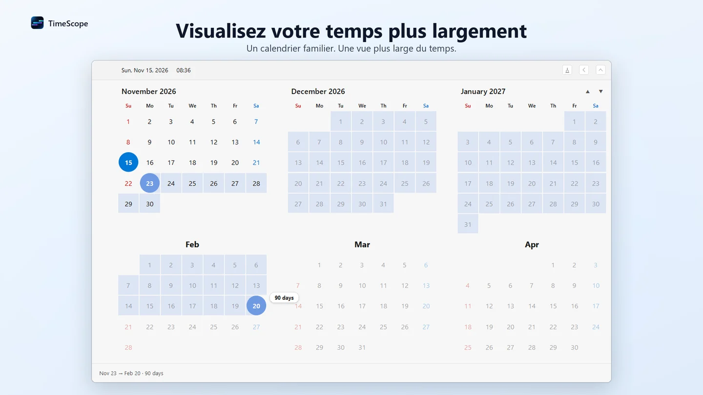
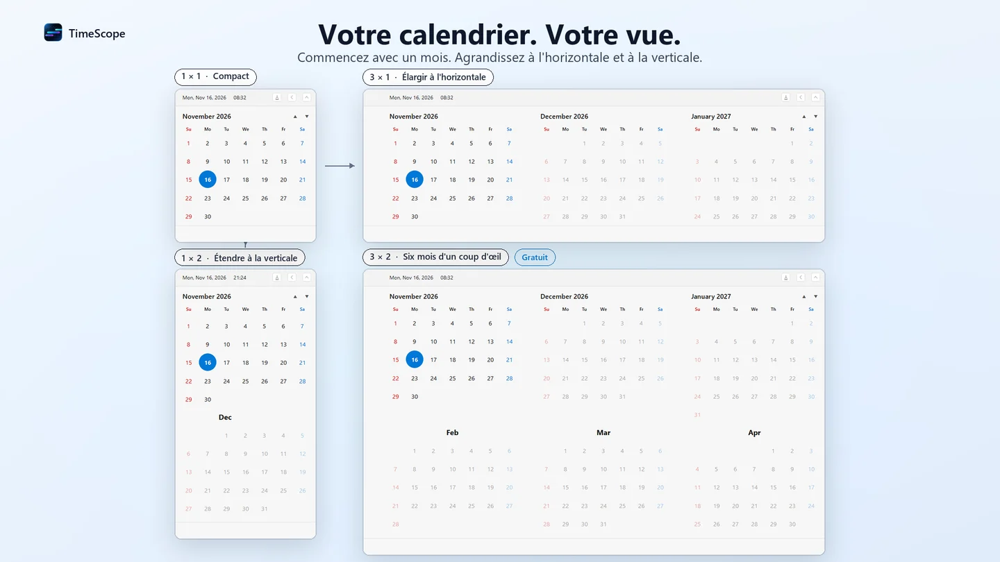
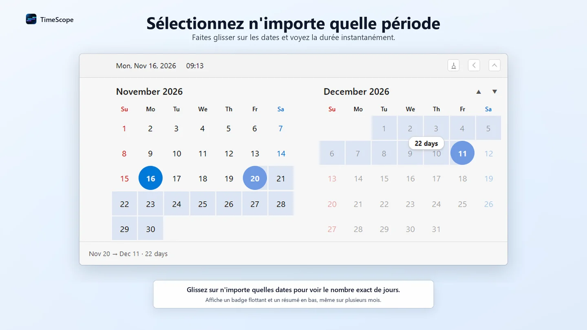
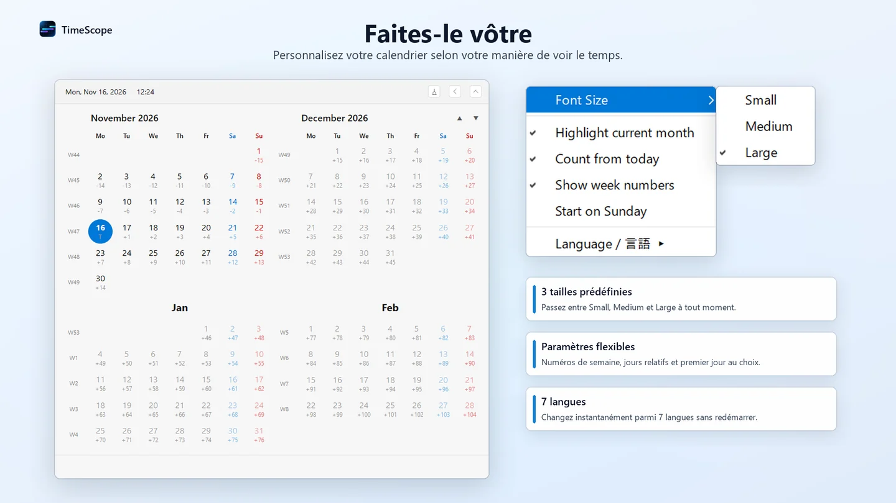
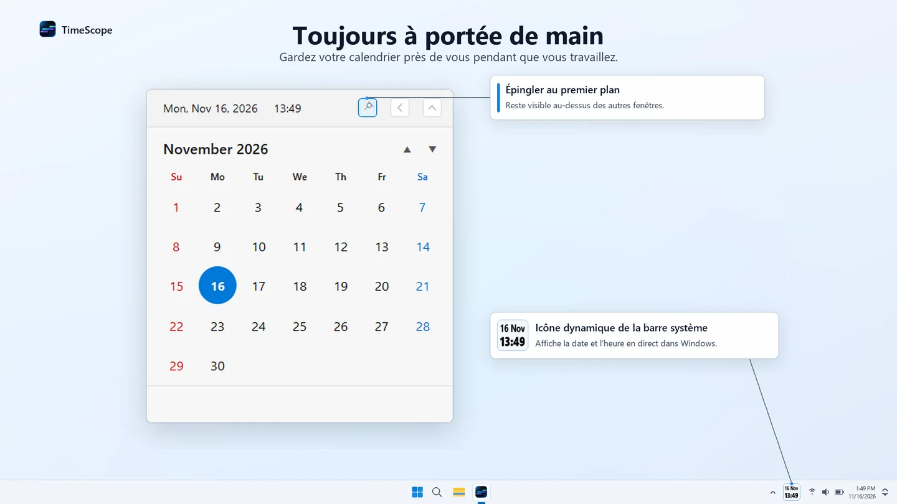

Voyez plus de mois d'un seul coup
Commencez avec un seul mois compact et agrandissez à l'horizontale et à la verticale selon l'espace de votre fenêtre et de votre écran.
Un calendrier de bureau Windows léger pour afficher plusieurs mois, sélectionner des plages de dates et comprendre leur durée en un clin d'œil.

Conçu pour explorer les dates rapidement, compter les jours et rester léger sur votre bureau.
Commencez avec un seul mois compact et agrandissez à l'horizontale et à la verticale selon l'espace de votre fenêtre et de votre écran.
Faites glisser sur n'importe quelles dates pour mettre en valeur une plage et lire immédiatement le nombre exact de jours.
Débloquez la comparaison multi-périodes, le choix du moniteur et les jours fériés et ouvrés personnalisés en achat unique.
Toutes les fonctions essentielles sont gratuites, sans planificateur ni synchronisation superflue.
Élargissez votre calendrier à l'horizontale et à la verticale selon l'espace disponible sur votre écran.

Connaissez la durée exacte d'un voyage ou d'un projet entre deux dates, même sur plusieurs mois, sans compter manuellement.

Réglez le début de semaine, les repères visuels et la langue directement depuis le menu, sans redémarrer.

Épinglez le calendrier au-dessus des autres fenêtres et consultez la date du jour via l'icône dynamique de la barre Windows.

Toutes les fonctions principales sont gratuites. Passez à Pro directement dans l'application via le Microsoft Store si besoin.
Affichage multi-mois, sélection de périodes et personnalisation complète.
Achat unique optionnel dans l'application, débloqué via le Microsoft Store.
TimeScope Pro est un module complémentaire durable en achat unique dans l'application via Microsoft Store (prix de base $4.99 USD ; les tarifs locaux et taxes varient selon la région). Sans abonnement.
Captures d'écran authentiques présentant l'édition gratuite et TimeScope Pro.
Vue calendrier multi-mois sur le bureau affichant six mois à la fois avec une plage continue de 90 jours.
Téléchargez gratuitement TimeScope – Visual Calendar sur Microsoft Store pour Windows 10 et Windows 11 (x64).
Obtenir sur Microsoft Store